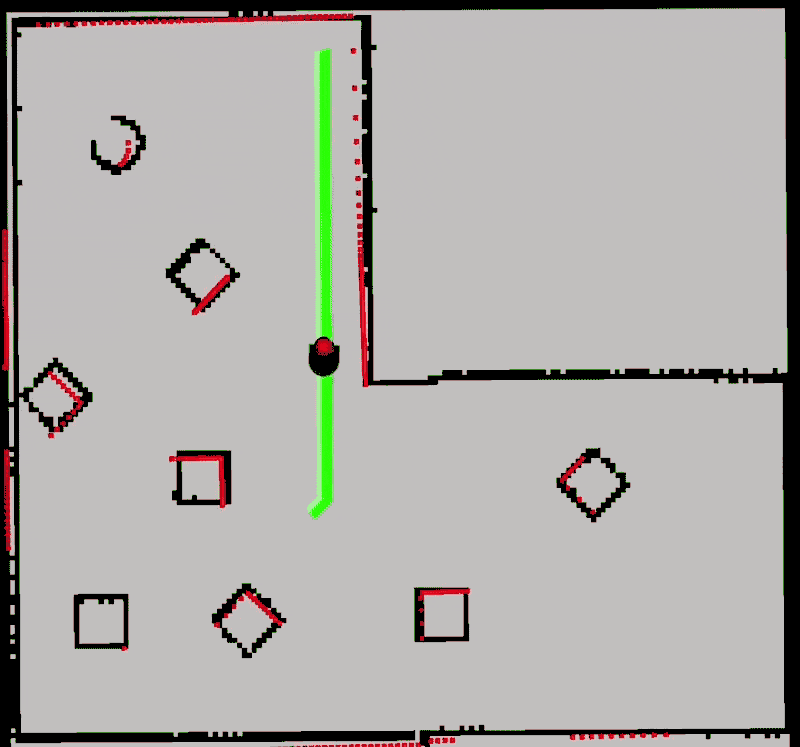
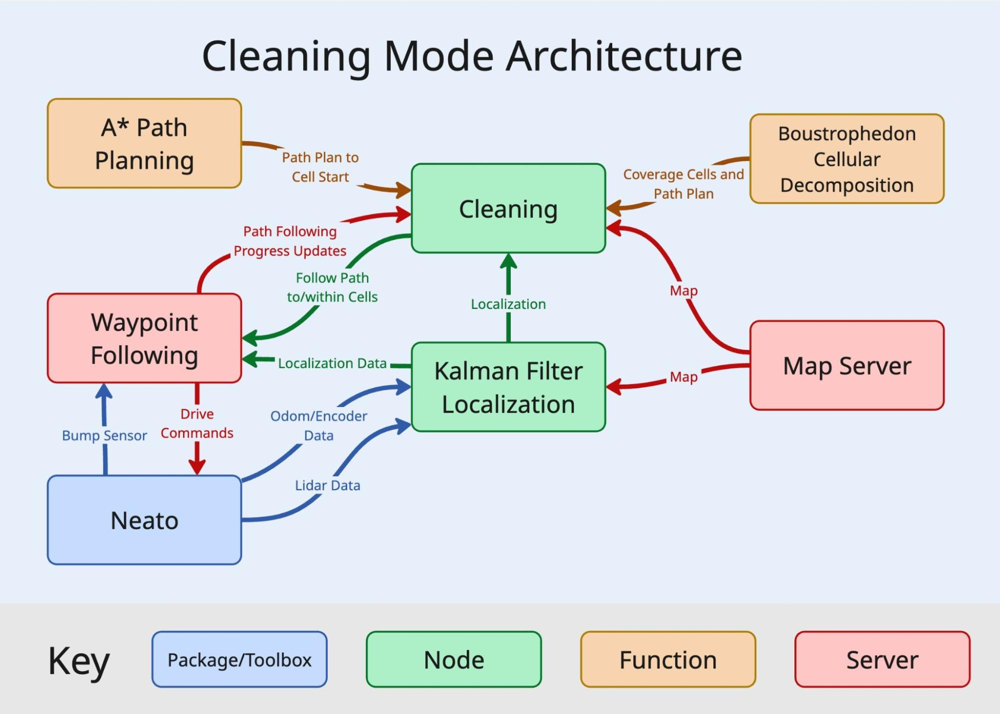
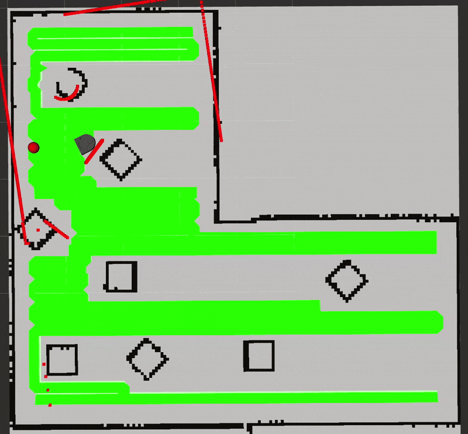
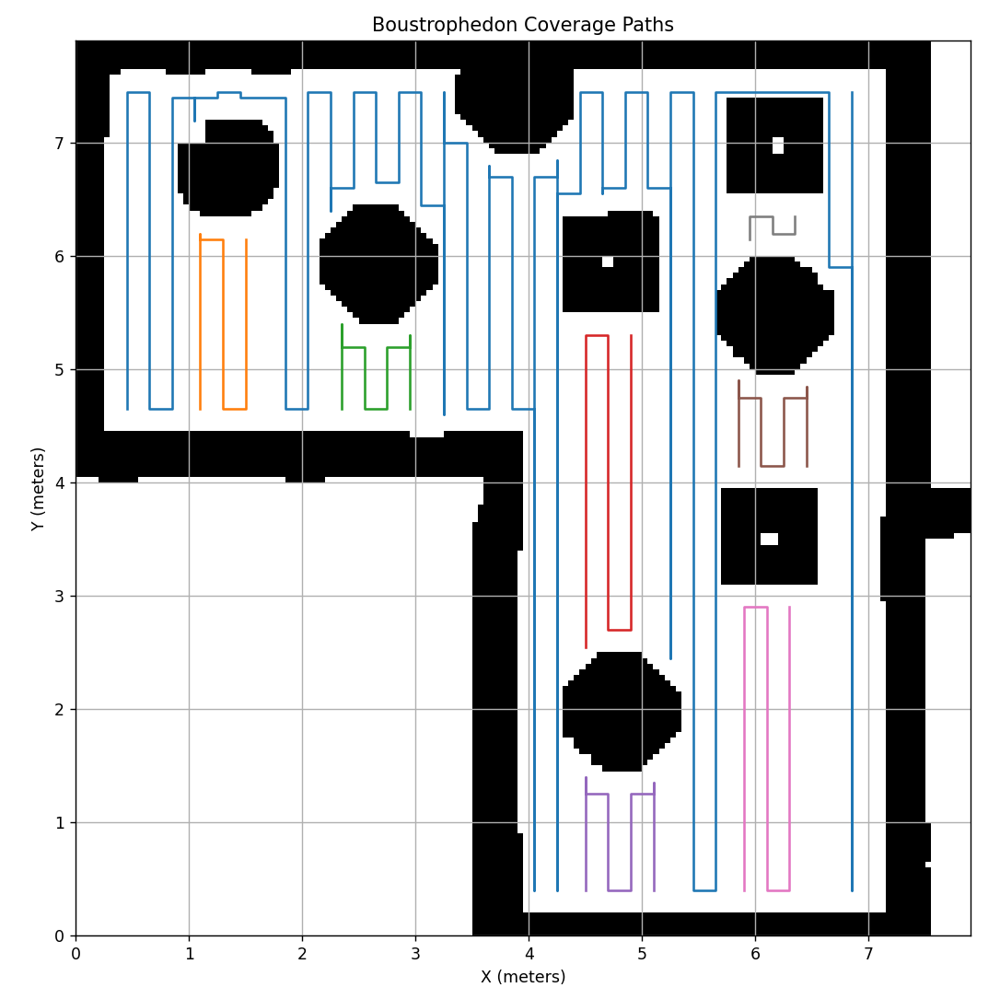
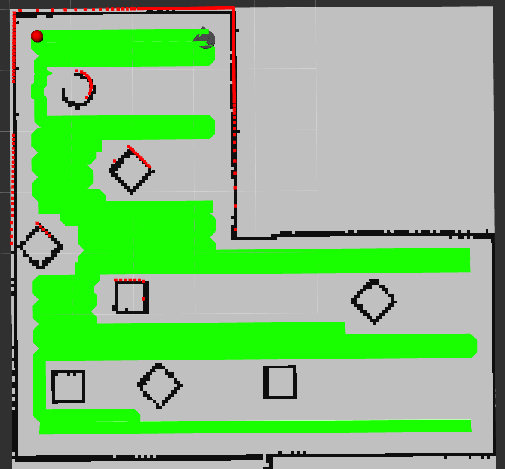

Cleaning
In the cleaning mode, the robot plans and executes a path to cover the entire area of the room, given a map created by the mapping mode. To do this, we used Boustrophedon Cellular Decomposition (BCD) for the coverage path planning. At a high level, BCD breaks the area into cells, then plans a zig zag (lawn mower) path to cover the area of each cell. To get from the end of the previous cell to the start of the next cell, we used A*. More details on these algorithms and the path following is available on the Mapping and Path Planning and Execution pages.
Additionally, for localization during cleaning, we developed a custom implementation of an extended kalman filter. More details are available on the Kalman Filter page.

Architecture
Here is a diagram of the cleaning mode architecture. There is a main Cleaning node that manages the process. It gets the localization information from kalman filter node, which it uses to path plan with the A* and BCD functions. It calls the Waypoint Following Action server to execute the path.

Algorithm
Here is the high level algorithm the Cleaning Node follows:
- Pull the map from the map server
- Call BCD with the map to generate the coverage cells and paths
-
Loop through coverage cells
- Plan a path using A* to get to start of the cell
- Execute path with waypoint following action server
- If the waypoint following action server is unsuccessful (hits an object), re-plan and execute path
- Execute the cell's coverage path with the waypoint following action server
- If the waypoint following the server is unsuccessful, plan and execute a path to the 3rd waypoint after the failure. Then resuming cleaning coverage path
One key feature of the cleaning is that if the waypoint following server is unsuccessful at following the path, it will either retry by planning a new path or it will resume cleaning the cell a few waypoints later. This maximizes coverage and can handle minor map changes or localization errors. Here is a demo of that.

Boustrophedon Cellular Decomposition
To generate an efficient coverage path during cleaning, we use a slightly modified Boustrophedon Cellular Decomposition (BCD). BCD is a classic coverage path planning algorithm designed to systematically cover an entire area while minimizing redundant motion. At a high level, the algorithm decomposes the free space in a map into a set of connected cells based on obstacle boundaries. Each cell represents a region that can be covered with simple, back-and-forth motion, similar to a lawnmower pattern. By breaking the problem into these smaller regions, BCD makes full-area coverage tractable even in environments with complex obstacle layouts. Different color path lines represent different cells created by our BCD algorithm.

Once the cells are generated, the robot follows a zig-zag coverage path within each cell to ensure that all reachable space is visited. When transitioning between cells, coverage paths alone are insufficient, so we use a general-purpose planner to move the robot from the end of one cell's coverage path to the start of the next. This combination allows the system to maintain both efficient local coverage and reliable global navigation, even when cells are separated by narrow passages or irregular geometry.
Our BCD algorithm is slightly modified to allow safer movement between travel lines. Rather than driving straight from the end of one line to the start of the next, which would often cause a collision with an obstacle, the neato will travel along the line it just cleaned until it reaches a safe spot to move over to the start of the next line. Experimentally this has completely removed all chances of collision during transition between cleaning lines.
Overall, BCD proved to be a reliable choice for our cleaning task. The structure of the algorithm makes it easy to reason about coverage while still working well with a grid-based map and a real robot. With our small modification to how the robot transitions between cleaning lines, the system is able to cover most of the mapped area safely and consistently, without excessive re-planning or repeated passes.
Limitations and Future Work
Cleaning mode has a few major limitations. First, it currently doesn't clean within a ~foot radius next to obstacles, including around the edge of the room, to prevent crashes. Our implementations of A* and BCD aren't designed for tight tolerances. This could be overcome by adding a new step to the cleaning process which is tracing the perimeter of obstacles and the room first using a proportional controller. This is similar to how real robot vacuums operate.
Another constraint is that the path planning and the map are static, so it depends on a constant environment. This is an unrealistic expectation because people and pets exist in a real environment, furniture, such as chairs, frequently move, and people put stuff on the floor. The next step would be dynamic path planning using the real-time lidar data to update the occupancy field in real time and replan if the lidar doesn't match well. We would need to do additional research on algorithms for an approach beyond that.
